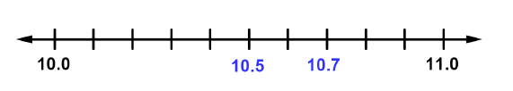

Chapter 1: Numbers
Section 1.4: Ordering and Rounding Decimals
Learning Objective(s)
- Use a number line to assist with comparing decimals.
- Compare decimals, beginning with their digits from left to right.
- Use < or > to compare decimals.
- Round a given decimal to a specified place.
Introduction
Decimal numbers are a combination of whole numbers and numbers between whole numbers. It is sometimes important to compare decimals to determine which is greater. For example, if someone ran the 100-meter dash in 10.57 seconds and someone else ran it in 10.67 seconds, you can compare the decimals to determine which time is faster. Knowing how to compare decimals requires an understanding of decimal place value and is similar to comparing whole numbers.
When working with decimals, there are also times when a precise number isn't needed. Rounding decimal numbers is helpful in those cases — for example, rounding 16.478 gallons to 16.5 gallons for a quick conversation.
Comparing Decimals
You can use a number line to compare decimals. The number further to the right on the number line is always the greater value.
Example 1
Use < or > to write a true sentence: 10.5 ☐ 10.7
Solution
The digits in the tenths places differ. Plot both numbers on a number line ranging from 10.0 to 11.0.

Answer: \(10.5 < 10.7\)
Another approach is to compare digits in each number from left to right, starting at the greatest place value. When two corresponding digits differ, the number with the greater digit is the greater decimal.
Example 2
Use < or > to write a true sentence: 35.689 ☐ 35.679
Solution
The tens, ones, and tenths digits (35.6) are the same in both numbers. Compare the hundredths digits: 8 versus 7.
Since 8 > 7, the number 35.689 is greater.
Answer: \(35.689 > 35.679\)
Example 3
Use < or > to write a true sentence: $45.67 ☐ $45.76
Solution
The tens and ones digits are the same. Compare the tenths digits: 6 versus 7.
Since 6 < 7, the value $45.67 is less than $45.76.
Answer: \(\$45.67 < \$45.76\)
If one number has more decimal places than the other, add placeholder zeros to the shorter number so both have the same number of digits. Adding zeros to the right of the last decimal digit does not change the value of the number.
Example 4
Use < or > to write a true sentence: 5.678 ☐ 5.6
Solution
Rewrite 5.6 as 5.600 by adding two placeholder zeros so both numbers have three decimal places.
Now compare digit by digit. The tenths digits are equal (6 = 6). Compare the hundredths digits: 7 versus 0.
Since 7 > 0, the number 5.678 is greater than 5.600.
Answer: \(5.678 > 5.6\)
Strategies for Comparing Decimals
- Use a number line — the number further right is greater.
- Compare digits from left to right. The first place where the digits differ determines which number is greater.
- Add placeholder zeros to the right of the decimal if the numbers have different numbers of decimal places.
Self Check A
Use < or > to write a true sentence: 45.675 ☐ 45.649
Compare digit by digit. The tenths digits are equal (6 = 6). Compare hundredths: 7 versus 4. Since 7 > 4:
\(45.675 > 45.649\)
Rounding Decimals
Rounding decimals follows the same rules as rounding whole numbers. You round to a given place value, and everything to the right of that place becomes zero. With decimals, however, trailing zeros after the decimal point can be dropped without changing the value.
| Dropping zeros at the end of a whole number changes its value | Dropping zeros at the end of a decimal does NOT change its value |
|---|---|
| \(7{,}200 \neq 72\) | \(36.00 = 36\) |
| \(200{,}000 \neq 2\) | \(1.00000 = 1\) |
| \(18.25000 = 18.25\) |
Example 5
A sprinter ran a race in 7.354 seconds. Round to the nearest tenth of a second.
Solution
The tenths digit is 3. The digit to its right (hundredths) is 5, which is 5 or greater, so round up.
\[7.354 \rightarrow 7.400 = 7.4\]The trailing zeros after the decimal are dropped.
Answer: 7.354 rounded to the nearest tenth is 7.4 seconds.

Example 6
Round 7.354 to the nearest hundredth.
Solution
The hundredths digit is 5. The digit to its right (thousandths) is 4, which is less than 5, so round down — keep the 5.
\[7.354 \rightarrow 7.350 = 7.35\]The trailing zero is dropped.
Answer: 7.354 rounded to the nearest hundredth is 7.35.
Sometimes you are asked to round a decimal to a place value in the whole number part. Remember that zeros to the left of the decimal point cannot be dropped.
Example 7
Round 1,294.6374 to the nearest hundred.
Solution
The hundreds digit is 2. The digit to its right (tens) is 9, which is 5 or greater, so round up.
\[1{,}294.6374 \rightarrow 1{,}300.000 = 1{,}300\]Zeros to the left of the decimal must be kept; zeros to the right of the decimal are dropped.
Answer: 1,294.6374 rounded to the nearest hundred is 1,300.
Tip on Rounding Decimals
When you round, everything to the right of the given place value becomes zero, and the digit in the given place either stays the same or rounds up by one. Trailing zeros after the decimal point should be dropped. Zeros to the left of the decimal point must be kept.
Self Check B
Round 10.473 to the nearest tenth.
The tenths digit is 4. The hundredths digit is 7, which is 5 or greater, so round up.
10.5
Summary
Ordering, comparing, and rounding decimals are important skills. You can determine the relative sizes of two decimal numbers by using number lines and by comparing digits in the same place value. To round a decimal to a specific place value, change all digits to the right of that place to zero and round the digit up or down as needed. Trailing zeros after the decimal point should be dropped.
Exercises
Round Whole Numbers
In the following exercises, round to the indicated place value.
Everyday Math
- Writing a Check. Jorge bought a car for $24,493. He paid for the car with a check. Write the purchase price in words.
- Writing a Check. Marissa's kitchen remodeling cost $18,549. She wrote a check to the contractor. Write the amount paid in words.
- Buying a Car. Jorge bought a car for $24,493. Round the price to the nearest: a) ten dollars b) hundred dollars c) thousand dollars d) ten-thousand dollars
- Remodeling a Kitchen. Marissa's kitchen remodeling cost $18,549. Round the cost to the nearest: a) ten dollars b) hundred dollars c) thousand dollars d) ten-thousand dollars
- Population. The population of China was 1,355,692,544 in 2014. Round the population to the nearest: a) billion people b) hundred-million people c) million people
- Astronomy. The average distance between Earth and the sun is 149,597,888 kilometers. Round the distance to the nearest: a) hundred-million kilometers b) ten-million kilometers c) million kilometers
Round Decimals — Nearest Tenth
In the following exercises, round each number to the nearest tenth.
Round Decimals — Nearest Hundredth
In the following exercises, round each number to the nearest hundredth.
Round Decimals — Hundredth, Tenth, and Whole Number
In the following exercises, round each number to the nearest a) hundredth b) tenth c) whole number.
Exercises taken from OpenStax Prealgebra, available free at cnx.org/content/col11756/1.9.